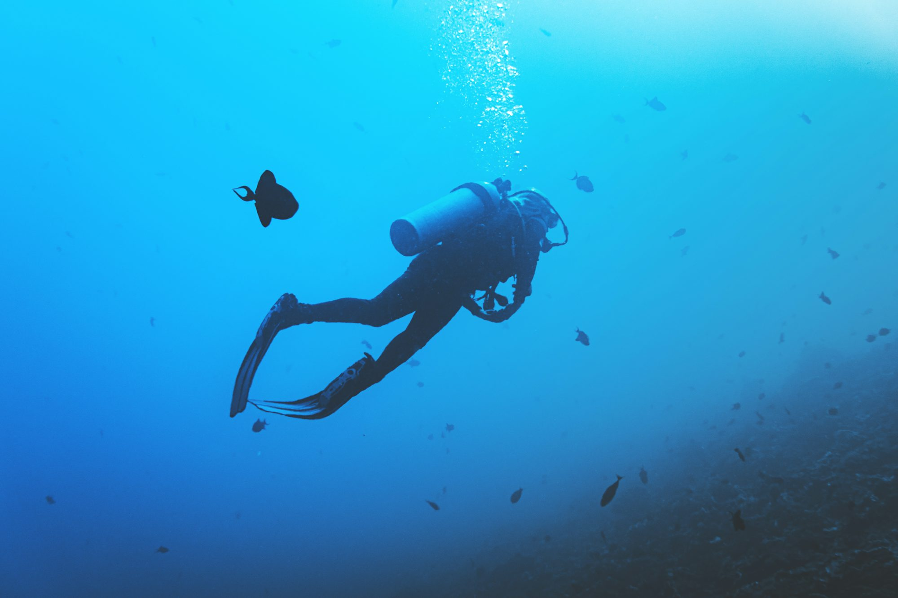
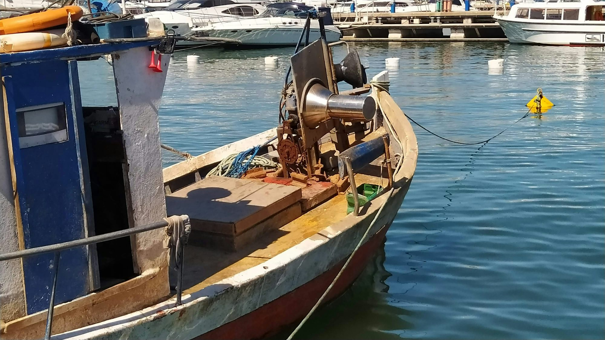
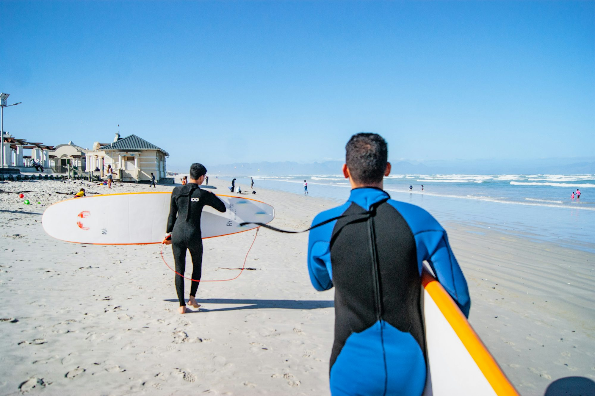
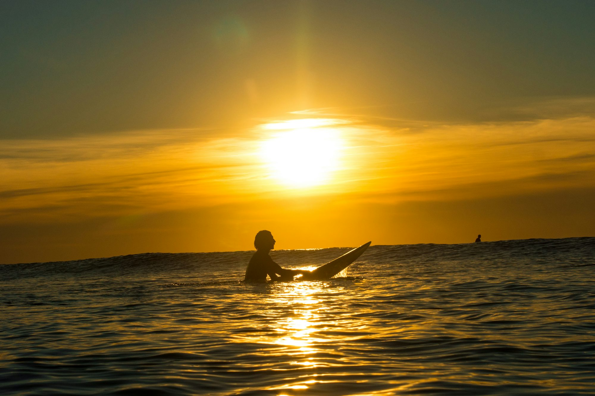
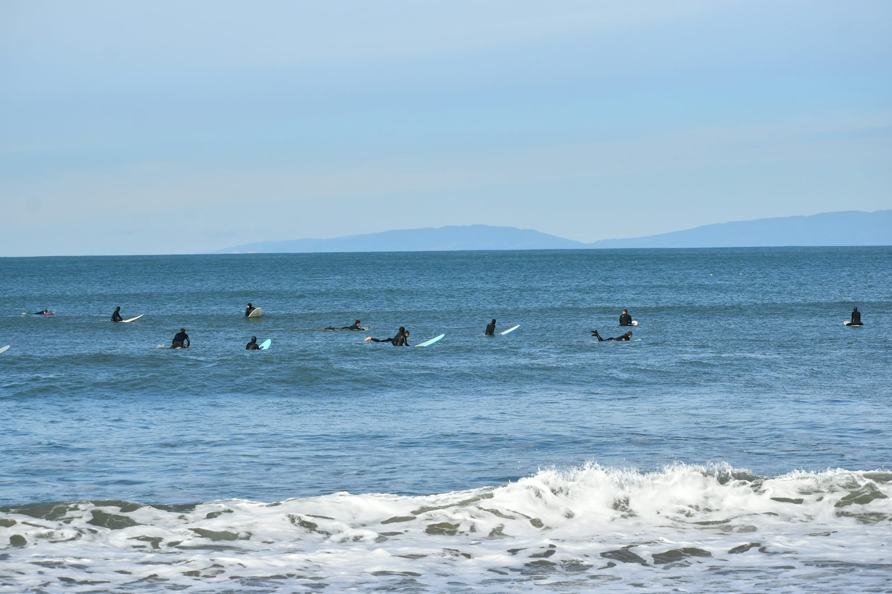
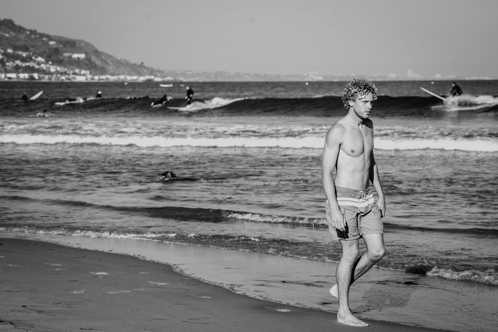
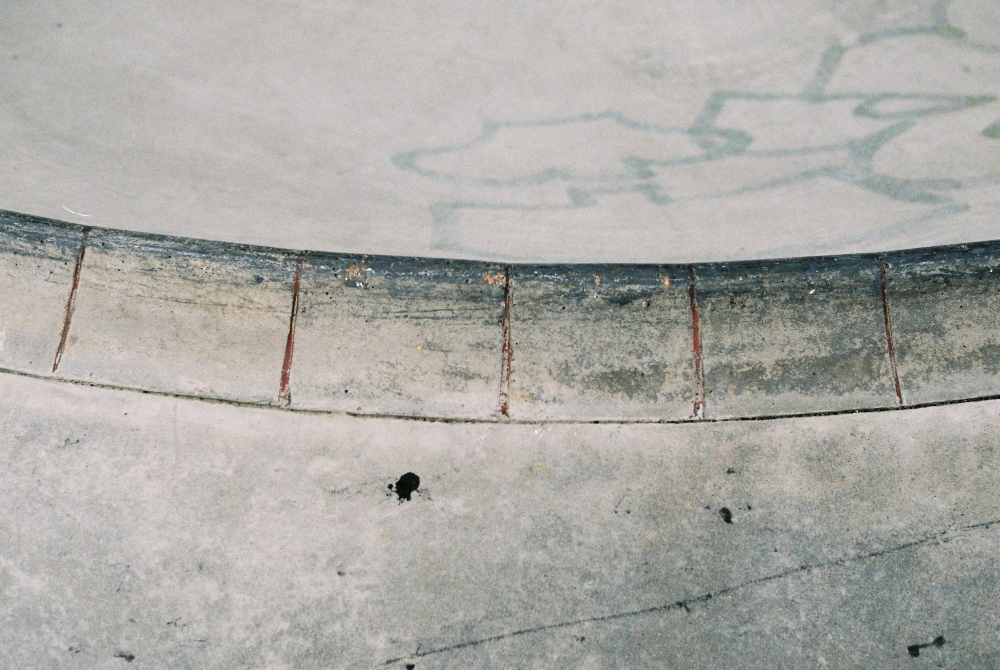
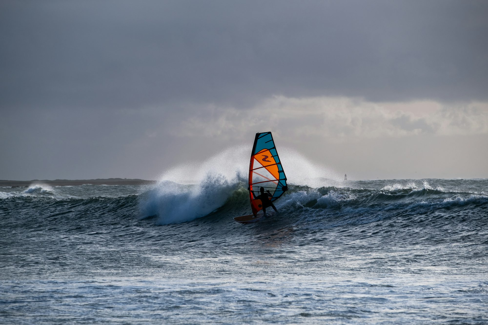
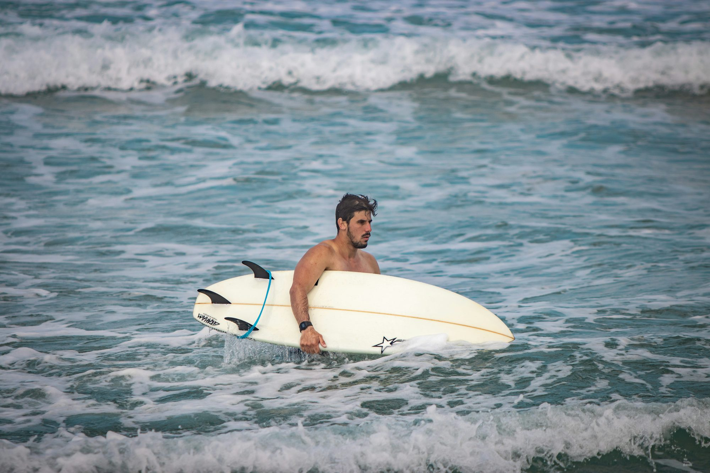

Exploring the Thrills of Street Skateboarding: Techniques, Culture, and Tips for Beginners
This article delves into the world of street skateboarding, covering the essential techniques, history, and culture of the sport. Whether you're new to skateboarding or looking to improve your skills, this guide provides valuable insights and tips to help you get started and progress.Album





Exploring the Waves: A Comprehensive Guide to Surfing Techniques
This article delves into various surfing techniques and styles, providing insights into the skills needed for each and the unique experiences they offer.

Emma Sullivan
November 18, 2025
Exploring the Thrill of Downhill Skateboarding: Techniques, Gear, and Safety
This article dives into the world of downhill skateboarding, highlighting the techniques, necessary gear, and key safety considerations for riders. It covers everything from the basics for beginners to advanced skills for seasoned riders, offering a comprehensive guide to this exhilarating discipline.

Elena Martinez
August 01, 2025
Exploring the Depths: A Guide to Spearfishing
This article delves into the thrilling sport of spearfishing, covering techniques, gear, and safety tips for both beginners and experienced anglers.

Liam Harrison
June 11, 2026
June 12, 2026
Exploring the Surfing Universe: A Guide to Styles, Techniques, and Culture
This article offers an in-depth look at the diverse styles of surfing, their unique techniques, and the cultural significance that shapes this vibrant sport.

June 09, 2026
Exploring the World of Coffee: From Bean to Brew
This article takes an in-depth look at the journey of coffee from its origins to the final brew, exploring its cultural significance and the art of preparation.

February 05, 2026
Exploring the Art of Fly Fishing: Techniques and Tips for Success
This article dives into the world of fly fishing, detailing techniques, equipment, and strategies to help anglers of all levels improve their skills and enjoy this unique fishing method.
July 19, 2025